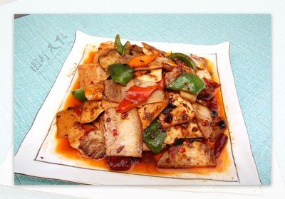

菜品介绍
回锅肉是四川传统菜式中家常菜肴的代表菜之一，属于川菜系列。制作原料主要有猪后臀肉、青椒、蒜苗等，口味独特，色泽红亮，肥而不腻。
回锅肉的特点是口味独特，色泽红亮，肥而不腻。所谓回锅，就是再次烹调的意思。回锅肉作为一道传统川菜，在川菜中的地位是非常重要的，川菜考级经常用回锅肉作为首选菜肴。
历史背景
回锅肉起源于清代末期，由一位姓凌的翰林偶然发明。然而，真相并非如此，回锅肉的源头可以追溯到北宋，具体于何时诞生、由何人刨制、自何时流行已无法考证。古时称为"油爆锅"，四川地区大部分家庭都会制作。
清代末年有一位姓凌的翰林，因宦途失意退隐家居，潜心研究烹饪。他将原煮后炒的回锅肉改为先将猪肉去腥味，以隔水容器密封的方法蒸熟后再煎炒成菜。因为久蒸至熟，减少了可溶性蛋白质的损失，保持了肉质的浓郁鲜香，原味不失，色泽红亮。自此，名噪锦城的久蒸回锅肉便流传开来。
制作步骤
1煮肉
将猪后臀肉（二刀肉）放入冷水锅中，加入姜片、葱段、花椒煮至断生（约20分钟），捞出放凉后切成薄片。
2准备配菜
蒜苗切斜段，青椒切块，郫县豆瓣酱和豆豉剁细备用。
3煸炒肉片
热锅少油，放入肉片煸炒至肉片卷曲呈灯盏窝状，肥肉部分透明，将肉片推至锅边。
4炒香调料
锅中底油加入郫县豆瓣酱、豆豉炒出红油和香味，再放入甜面酱略炒。
5混合翻炒
将肉片与调料炒匀，加入少许白糖、酱油调味。
6加入配菜
放入青椒翻炒片刻，最后加入蒜苗快速翻炒均匀即可出锅。

食材清单
主料
- 猪后臀肉(二刀肉) 300克
辅料
- 蒜苗 3根
- 青椒 1个
- 生姜 3片
- 大葱 1段
- 花椒 10粒
调味料
- 郫县豆瓣酱 1汤匙
- 豆豉 1茶匙
- 甜面酱 1茶匙
- 酱油 1茶匙
- 白糖 1/2茶匙
- 食用油 适量
营养信息
* 营养信息为每份估算值，实际数值可能因食材和烹饪方式有所不同